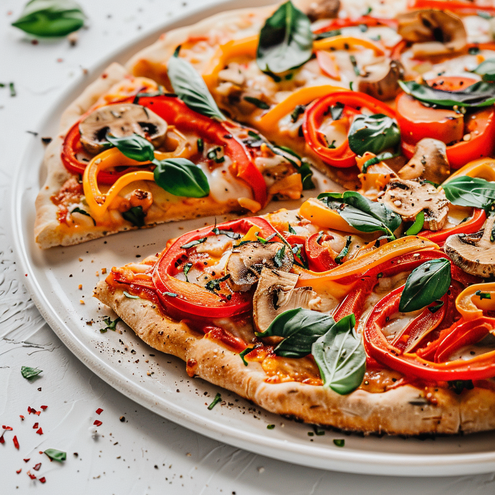

Homemade Vegetable Pizza is a delicious Italian-inspired dish featuring a soft, chewy crust topped with flavorful tomato sauce, melted mozzarella cheese, and colorful fresh vegetables. The crust becomes beautifully golden in the oven while the cheese melts into a rich, gooey layer. Every slice combines savory sauce, creamy cheese, and the fresh crunch of vegetables, creating a satisfying meal for pizza lovers. Whether prepared for a weekend treat, a family gathering, or a casual dinner, homemade pizza allows you to customize the toppings according to your taste. Serve it hot with oregano and chili flakes for a delicious pizzeria-style experience at home.
Add the flour, instant yeast, sugar, and salt to a large mixing bowl. Mix the dry ingredients thoroughly. Gradually pour in the warm water and olive oil while mixing until a rough dough begins to form.
The water should be warm rather than hot. Excessively hot water can damage the yeast and prevent the dough from rising.
Transfer the dough to a lightly floured surface and knead for approximately 8-10 minutes until it becomes smooth and elastic. If the dough feels too sticky, add a little flour, but avoid adding too much because it can make the crust dense.
Place the dough in a lightly oiled bowl and turn it once so the surface is lightly coated. Cover the bowl with a clean kitchen towel or plastic wrap.
Leave it in a warm place for approximately 60-90 minutes, or until the dough has roughly doubled in size. The exact time depends on the room temperature.
Heat olive oil in a small saucepan over medium-low heat. Add the minced garlic and sauté briefly until fragrant. Avoid browning the garlic too much.
Add the tomato puree, oregano, basil, black pepper, and salt. Stir well and simmer for approximately 8-12 minutes until the sauce thickens slightly. Allow it to cool before spreading it over the dough.
If you are using ready-made pizza sauce, you can skip this step and use it directly.
Wash the vegetables thoroughly and slice the onion, capsicum, tomato, and mushrooms. Pat them dry to remove excess moisture. Slice the olives if you are using them.
Keeping the vegetables relatively dry helps prevent the pizza base from becoming soggy during baking.
Preheat your oven to 230°C (450°F), or to the highest temperature recommended for your oven and pizza equipment. If you have a pizza stone or steel, preheat it according to the manufacturer's instructions.
Once the dough has risen, gently press it to release excess air. Divide it into two portions for two medium pizzas, or use the whole dough for one large pizza.
Roll or stretch the dough into a round shape on a lightly floured surface. Leave the edges slightly thicker if you prefer a raised crust. Transfer it to a suitable baking tray or pizza pan.
Spread a thin, even layer of pizza sauce over the base, leaving a small border around the edges. Sprinkle mozzarella cheese evenly over the sauce.
Avoid adding too much sauce because excess moisture can prevent the crust from becoming crisp.
Arrange the sliced onion, capsicum, tomato, mushrooms, and olives over the cheese. Distribute the toppings evenly so each slice gets a good combination of flavors.
Sprinkle dried oregano and chili flakes over the toppings. Brush the exposed crust lightly with olive oil if desired.
Carefully place the pizza in the preheated oven. Bake for approximately 10-15 minutes, depending on the thickness of the crust and your oven.
The pizza is ready when the cheese is melted and bubbling, the edges are golden brown, and the base is cooked through. Keep an eye on it because baking times vary between ovens.
Remove the pizza from the oven and allow it to rest for 2-3 minutes. Add fresh basil leaves or a little grated Parmesan cheese if desired.
Use a pizza cutter or sharp knife to divide the pizza into slices. Serve while the cheese is warm and stretchy.
Serve homemade vegetable pizza hot with extra oregano, chili flakes, or a little garlic butter brushed around the crust. It pairs well with a fresh green salad, roasted vegetables, or a light soup. You can also serve it with your favorite dipping sauce. For a classic pizzeria-style meal, cut the pizza into triangular slices and enjoy it while the mozzarella is still warm and melted.
Homemade Vegetable Pizza combines a golden crust, flavorful tomato sauce, melted cheese, and colorful toppings to create a delicious meal that everyone can customize. Once you learn the basic dough and layering process, you can experiment with different sauces, cheeses, and vegetables to create your own favorite combination. Slice it fresh from the oven and enjoy a homemade pizza packed with flavor!